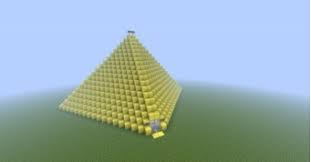
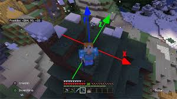

Geometria Espacial
No Minecraft, tudo são cubos. Isso permite uma diversidade incrível de aplicações para as aulas de matemática, como geometria espacial, volume, área de superfícies e perímetro. Por exemplo, os jogadores podem construir pirâmides com uma quantidade pré-definida de blocos ou prismas de diferentes bases.
Coordenadas
As coordenadas desempenham um papel fundamental no Minecraft. A exploração é a principal experiência, uma vez que a geração do mundo ocorre de forma procedural, ou seja, de maneira aleatória e dinâmica, proporcionando uma nova experiência a cada vez que se inicia uma nova partida.
Proporcionalidade
A proporcionalidade é um conceito matemático importante no Minecraft. Por exemplo, ao aprender sobre proporção no Ensino Fundamental, um jogador descobriu que o ganho por hora no jogo não seguia uma tendência proporcional.
Construção de objetos
A matemática também é usada na construção de objetos no Minecraft. Por exemplo, a construção de um livro a partir da combinação de bambu e couro, ou a construção de um cômodo que caiba uma quantidade pré-determinada de personagens.